Programação do Evento
CREDENCIAMENTO
CERIMÔNIA DE ABERTURA
SUBPRODUTOS AGROINDUSTRIAIS: UMA ALTERNATIVA PROMISSORA E SUSTENTÁVEL NA PRODUÇÃO DE INGREDIENTES E ALIMENTOS
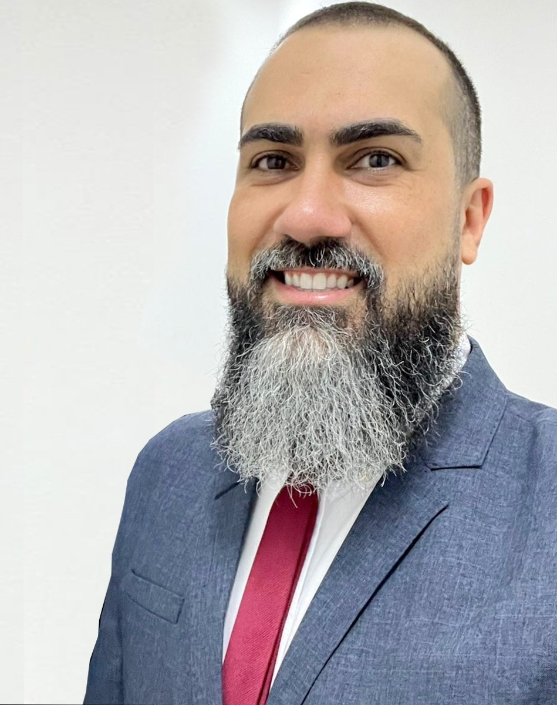
Prof. Dr. Ailton Cesar Lemes
Escola de Química/UFRJ
VISÃO COMPUTACIONAL E TÉCNICAS DE APRENDIZAGEM DE MÁQUINAS APLICADAS À AGRICULTURA

Prof. Dr. Anderson Gomide Costa
UFRRJ
MOMENTO DE DISCUSSÃO SOBRE AS PALESTRAS
Prof. Dr. Ailton Cesar Lemes
Escola de Química/UFRJ
Prof. Dr. Anderson Gomide Costa
UFRRJ
COFFEE BREAK/MOMENTO NETWORKING
ALMOÇO
AUTOMAÇÃO DE PIVÔ CENTRAL

André Luiz Milhardes Mendes
Senar - GO
Minicurso NOÇÕES DE REDES NEURAIS CONVOLUCIONAIS: UTILIZAÇÃO DO SOFTWARE "CNN CLASSIFICATION FRUIT"
Prof. Dr. Anderson Gomide Costa
UFRRJ
O FUTURO DO AGRO TEM VOZ DE MULHER?
.jpeg)
Josiane Arantes
Mestranda (IF Goiano - Campus Rio Verde)
.jpeg)
Prof. Dr. Gabriel de Paula
IF Goiano/Campus Morrinhos
MESA-REDONDA - OS DESAFIOS DA DESIGUALDADE DE GÊNERO NA EXTENSÃO RURAL
.jpg)
Thalia Cristina Vieira
Zootecnista
.jpg)
Grazyana do nascimento Sousa Machado
Veterinária

Profa. Dra. Andréia Cezario
IF Goiano - Campus Morrinhos
MOMENTO DE DISCUSSÃO SOBRE AS TEMÁTICAS ABORDADAS NAS PALESTRAS
COFFEE BREAK/MOMENTO NETWORKING
ENCERRAMENTO E AVISOS
CREDENCIAMENTO
SUBPRODUTOS AGROINDUSTRIAIS: UMA ALTERNATIVA PROMISSORA E SUSTENTÁVEL NA PRODUÇÃO DE INGREDIENTES E ALIMENTOS
Prof. Dr. Ailton Cesar Lemes
Escola de Química/UFRJ
CYBERSEGURANÇA E PROTEÇÃO AOS DADOS EM TECNOLOGIAS APLICADAS AO AGRO
Sidimar Lopes da Silva Junior
Mestre em Ciências da Computação
O FUTURO DO AGRO TEM VOZ DE MULHER?
Josiane Arantes
Mestranda (IF Goiano - Campus Rio Verde)
Prof. Dr. Gabriel de Paula
IF Goiano/Campus Morrinhos
MESA-REDONDA
COFFEE BREAK/MOMENTO NETWORKING
ESCOLA DO CHOCOLATE: SUSTENTABILIDADE NA CULTURA CACAUEIRA EM RONDÔNIA - DA COLHEITA AO PROCESSAMENTO DO CACAU
Profa. Dra. Marília Assis dos Santos
IFRO/Campus Jaru
Minicurso ( 25 vagas ) PRODUÇÃO DE QUEIJO ARTESANAL

Sandra Maria Silva Cardoso
Agricultura Familiar
OS BIOINSUMOS NO MANEJO DA CULTURA DO TOMATE PARA PROCESSAMENTO INDUSTRIAL
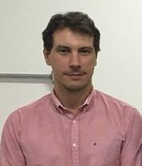
Prof. Dr. Nadson Pontes
IF Goiano/CEBIO/Campus Morrinhos
COFFEE BREAK/MOMENTO NETWORKING
INTRODUÇÃO À MACHINE LEARNING COM A CLUSTERIZAÇÃO E APRENDIZADO POR REFORÇO

Prof. Dr. Rodrigo Elias
IF Goiano/Campus Morrinhos
MESA-REDONDA - DISCUSSÃO SOBRE AS TEMÁTICAS ABORDADAS NAS PALESTRAS 1, 2 E 3
Profa. Dra. Marília Assis dos Santos
IFRO/Campus Jaru
Prof. Dr. Nadson de Carvalho Pontes
IF Goiano/CEBIO/Campus Morrinhos
Prof. Dr. Rodrigo Elias
IF Goiano/Campus Morrinhos
ALMOÇO
ALTERNATIVAS DE CULTIVO PARA OTIMIZAÇÃO DO ESPAÇO AGRÍCOLA NA ÁFRICA: ESTRATÉGIAS SUSTENTÁVEIS ALÉM DO ALGODÃO E SEU IMPACTO NA SEGURANÇA ALIMENTAR E NOS ODS
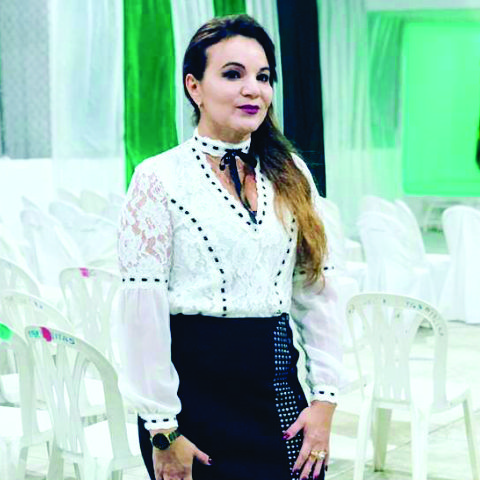
Profa. Dra. Alfredina dos Santos Araújo
UFCG/PPGSA/Campus Pombal
EXPERIÊNCIA DA AGROECOLOGIA NA PRODUÇÃO DE ALIMENTOS
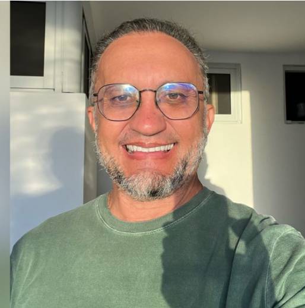
Prof. Dr. Gilcean Silva Alves
IFPB/Campus Sousa
MESA-REDONDA - DISCUSSÃO SOBRE AS TEMÁTICAS ABORDADAS NAS PALESTRAS 4 E 5
Profa. Dra. Alfredina dos Santos Araújo
UFCG/PPGSA/Campus Pombal
Dr. Gilcean
IFPB/Campus Sousa
COFFEE BREAK/MOMENTO NETWORKING
ENCERRAMENTO E AVISOS
ESCOLA DO CHOCOLATE: SUSTENTABILIDADE NA CULTURA CACAUEIRA EM RONDÔNIA - DA COLHEITA AO PROCESSAMENTO DO CACAU
Profa. Dra. Marília Assis dos Santos
IFRO/Campus Jaru
EXPERIÊNCIA DA AGROECOLOGIA NA PRODUÇÃO DE ALIMENTOS
Prof. Dr. Gilcean Silva Alves
IFPB/Campus Sousa
RECICLAGEM ANIMAL: PARA ONDE VÃO OS RESÍDUOS QUE NÃO CONSUMIMOS?
Bruna de Sousa Silva
Associação Brasileira de Reciclagem Animal
MESA-REDONDA - DISCUSSÃO SOBRE AS TEMÁTICAS ABORDADAS NAS PALESTRAS 1 E 2
COFFEE BREAK/MOMENTO NETWORKING
MOMENTO CULTURAL/INTEGRAÇÃO NÚCLEO COMUM
MELHORAMENTO GENÉTICO DE BOVINOS PARA QUALIDADE DE CARNE

Me. Maury Dorta de Souza Junior
Embrapa Gado de Corte/Programa GenePlus
AUTOMATIZAÇÃO DE PROCESSOS USANDO N8N

Guilherme Correia Dutra
Pesquisador - CEIA e Mestrando/UFG
COFFEE BREAK/MOMENTO NETWORKING
QUALIDADE E SEGURANÇA DOS PRODUTOS ALIMENTÍCIOS PROCESSADOS NA CIDADE DE GOIÁS POR AGRICULTORES FAMILIARES

Profa. Dra. Adriana Régia Marques de Souza
UFG/Campus Samambaia
MESA-REDONDA - DISCUSSÃO SOBRE AS TEMÁTICAS ABORDADAS NAS PALESTRAS 1, 2 E 3
Profa. Dra. Adriana Régia Marques de Souza
UFG/Campus Samambaia
Me. Maury Dorta de Souza Junior
Embrapa Gado de Corte/Programa GenePlus
Guilherme Correia Dutra
Pesquisador - CEIA e Mestrando/UFG
ALMOÇO
O MERCADO DE TI NO AGRONEGÓCIO

Itamar Silva de Melo
Minicurso 1 ENTOMOFAGIA: UMA SOLUÇÃO SUSTENTÁVEL PARA A PRODUÇÃO DE PROTEÍNAS
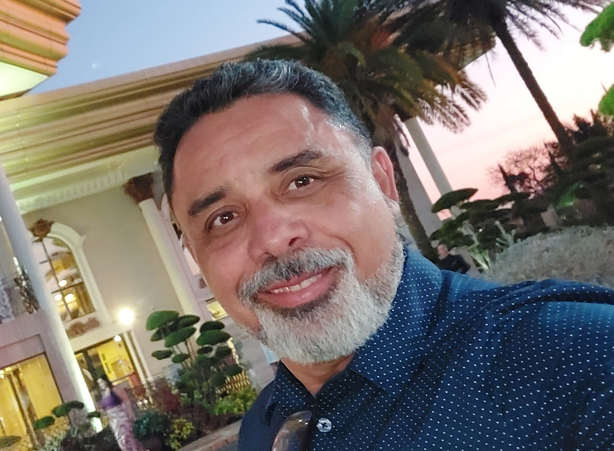
Prof. Márcio Ramatiz
IF Goiano/Campus Ceres
Minicurso 3 ANÁLISE SENSORIAL DE CHOCOLATE: INOVAÇÃO E SUSTENTABILIDADE NA AGROINDÚSTRIA CACAUEIRA
Profa. Dra. Marília Assis dos Santos
IFRO/Campus Jaru
Minicurso 4 OFICINA DE CAFÉS ESPECIAIS

Prof. Dr. Rodrigo Vieira
IF Goiano/Campus Morrinhos
Minicurso 5 EXTRAÇÃO E IDENTIFICAÇÃO DE NEMATÓIDES
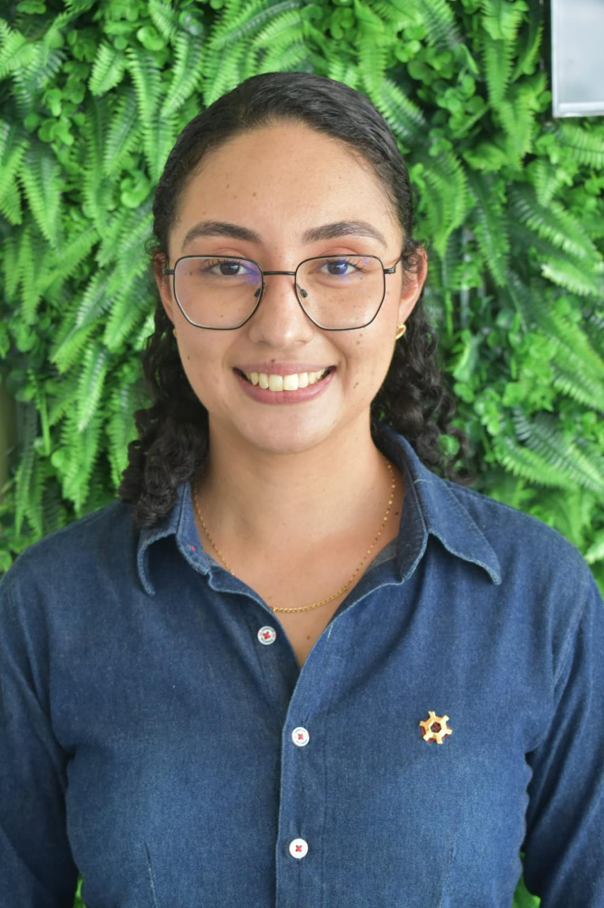
Gabriela Araújo Martins
Mestranda - IF Goiano/Campus Morrinhos
Minicurso 6 REGULAGEM E CALIBRAÇÃO DE PULVERIZADORES

Prof. Dr. Túlio de Almeida Machado
IF Goiano/Campus Morrinhos

Marcelo Divino de Moraes
Mestrando - IF Goiano - Campus Morrinhos
Minicurso 7 BIOCLIMATOLOGIA APLICADA À PRODUÇÃO DE BOVINOS
Profa. Dra. Eliandra Bianchini
IF Goiano/Campus Morrinhos
Minicurso 9 OFICINA – COSMÉTICOS: BELEZA E CIÊNCIA
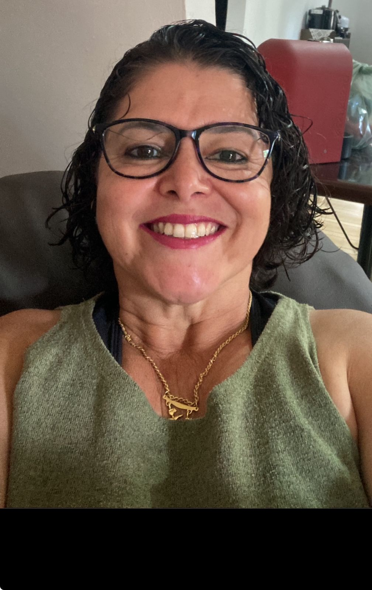
Dra Sandra Cristina Marquez
IF Goiano/Campus Morrinhos

Isadora Mendonça Neves
Discente de Química - IF Goiano/Campus Morrinhos

Stella Mara Araújo
Discente Química - IF Goiano/Campus Morrinhos
Minicurso 10 SELEÇÃO DE REPRODUTORES BOVINOS
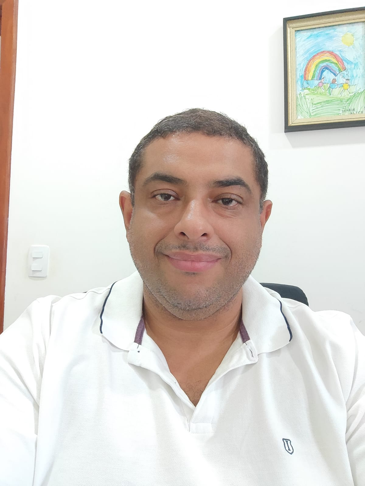
Prof. Dr. Jeferson Corrêa Ribeiro
IF Goiano/Campus Morrinhos
Minicurso 11 MICROBIOLOGIA APLICADA À INDÚSTRIA DE ALIMENTOS
Profa. Dra. Alfredina dos Santos Araújo
UFCG/PPGSA/Campus Pombal
.jpeg)
Prof. Dr. Wiaslan Figueirado Martins
IF Goiano/PPGBB/Campus Morrinhos
Minicurso 12 PALMA FORRAGEIRA: PLANTIO, MANEJO E UTILIZAÇÃO

Profa. Dra. Maria do Socorro de Caldas Pinto
UEPB/Campus Catolé do Rocha
Minicurso 13 ELABORAÇÃO DE PROJETOS PARA COMITÊ DE ÉTICA EM PESQUISA: DA IDEIA À SUBMISSÃO

Profa. Dra. Suely Ribeiro Cunha
IF Goiano/Campus Morrinhos
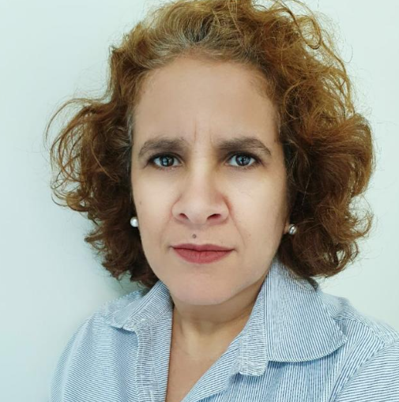
Profa. Dra. Sangelita F. Mariano
IF Goiano/Campus Morrinhos
Minicurso Cultural 14 VIVÊNCIA DE MACULELÊ NA ESCOLA
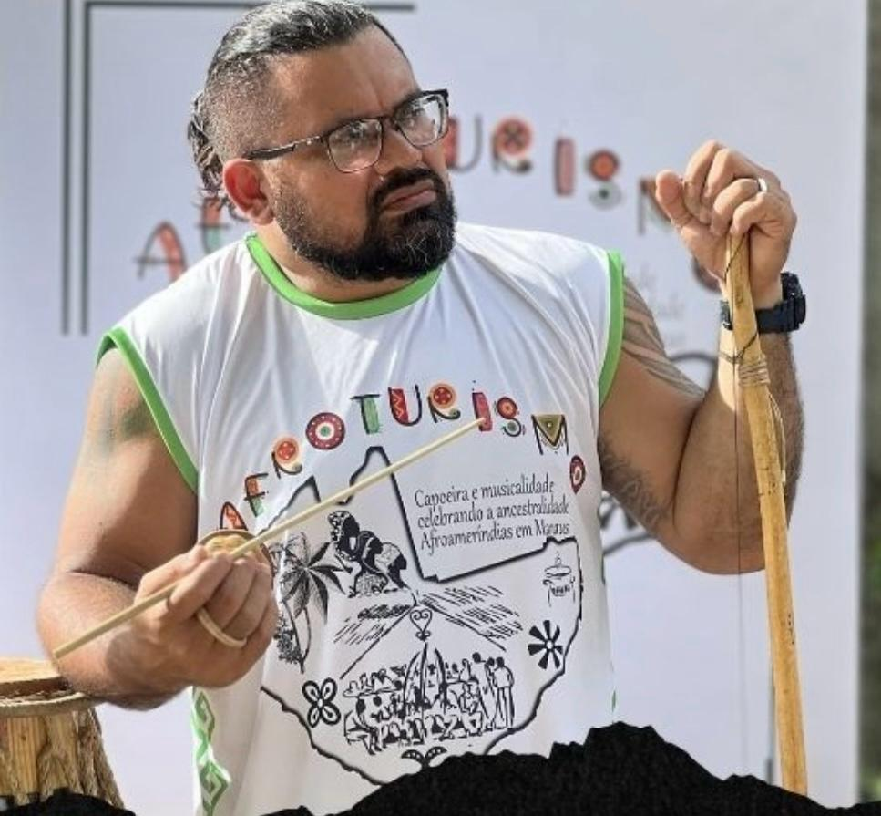
Thommy Gimaque Nascimento
Professor de capoeira - Manaus - AM
ENCERRAMENTO E AVISOS
Minicurso 1 ANÁLISE SENSORIAL DE CHOCOLATE: INOVAÇÃO E SUSTENTABILIDADE NA AGROINDÚSTRIA CACAUEIRA
Profa. Dra. Marília Assis dos Santos
IFRO/Campus Jaru
RECICLAGEM ANIMAL: PARA ONDE VÃO OS RESÍDUOS QUE NÃO CONSUMIMOS?
Bruna de Sousa Silva
Associação Brasileira de Reciclagem Animal
DUPLA PODA DA VIDEIRA, MANEJO DO SOLO E DA PLANTA: O QUE SE SABE E PARA ONDE IR
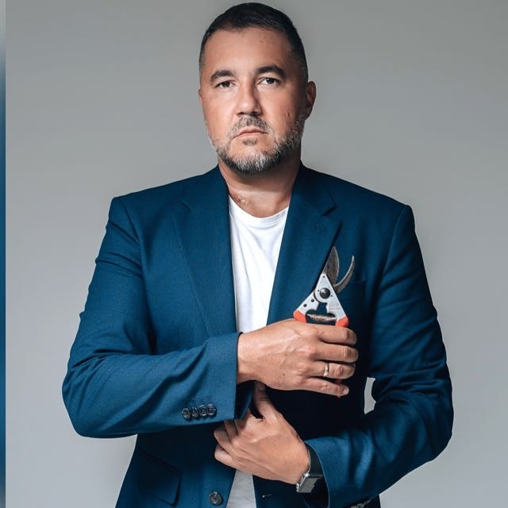
Prof. Dr. Leonardo Cury
IFRS - Bento Gonçalves
COFFEE BREAK/MOMENTO NETWORKING
VISÃO COMPUTACIONAL PARA CONTAGEM E ANÁLISE DE MICRO-ORGANISMOS DE INTERESSE AGRÍCOLA
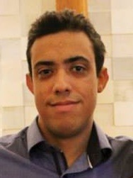
Prof. Dr. Alexandre Carvalho Silva
IF Goiano/Campus Morrinhos